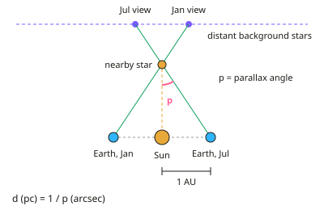

A-level Physics Year 13 · Topic 12
Stars: distances and radiation
Stars, distances and radiation is about how we measure the Universe using only the light that reaches us.
We will use astronomical units, light-years and parsecs, and find distances to nearby stars from stellar parallax.
Then we link luminosity and intensity, use magnitudes, black-body radiation and stellar spectra, and finish with standard candles.
- 6 subtopics
- 163 questions
- Free: 12.1 notes and 10 questions
In this topic
- 12.1Astronomical distances: AU, light-year, parsec and stellar parallaxFree below · 42 questions
- 12.2Luminosity, intensity and the inverse-square law for starlightOpen in Full Marks · 43 questions
- 12.3Apparent and absolute magnitude scalesOpen in Full Marks · 23 questions
- 12.4Black-body radiation: Wien's displacement law and the Stefan–Boltzmann lawOpen in Full Marks · 18 questions
- 12.5Stellar spectra and spectral classesOpen in Full Marks · 14 questions
- 12.6Standard candles: Cepheid variables and Type Ia supernovaeOpen in Full Marks · 23 questions
12.1 · Free notes
Astronomical distances: AU, light-year, parsec and stellar parallax

Key points
- The astronomical unit (AU) is the mean distance from the Earth to the Sun, 1.50 × 10¹¹ m. It is used for distances within the Solar System.
- A light-year (ly) is the distance light travels in a vacuum in one year: 3.00 × 10⁸ m s⁻¹ × 3.16 × 10⁷ s ≈ 9.46 × 10¹⁵ m. It is a unit of distance, not time.
- A parsec (pc) is the distance at which 1 AU subtends an angle of 1 arcsecond. 1 pc = 3.09 × 10¹⁶ m = 3.26 ly ≈ 2.06 × 10⁵ AU.
- Angles: 1 arcminute = 1/60 degree and 1 arcsecond = 1/3600 degree. Parallax angles for stars are always less than 1 arcsecond.
- Stellar parallax is the apparent shift in a nearby star's position against distant background stars as the Earth orbits the Sun. Compare photographs taken six months apart.
- The parallax angle p is half the total angular shift over six months. It is the angle subtended at the star by the Earth–Sun distance (1 AU), the baseline.
- Distance is d (pc) = 1 / p (arcsec). A smaller parallax angle means a more distant star; a star with p = 0.50″ is 2.0 pc away.
- For small angles, p (radians) = 1 AU / d. This is how the parsec is derived, and you may need to convert arcseconds to radians in calculations.
- Distant stars are used as the reference because their own parallax is too small to detect, so they act as a fixed background.
- The method works only for nearby stars, up to roughly 100 pc from the ground. Beyond that p is too small to measure because of atmospheric distortion. Space telescopes such as Gaia extend the range.
- Use the right unit: AU for the Solar System, ly for popular descriptions and pc for professional astronomy. The order of size is AU < ly < pc.
In more detail
- Worked parallax: Proxima Centauri has p = 0.768″ → d = 1 ÷ 0.768 = 1.30 pc = 4.02 × 10¹⁶ m ≈ 4.2 ly.
- Unit conversions: 1 pc = 3.09 × 10¹⁶ m = 3.26 ly = 2.06 × 10⁵ AU; 1 ly = 9.46 × 10¹⁵ m; 1 AU = 1.50 × 10¹¹ m.
- Deriving the parsec: 1″ = 1/3600° = 4.85 × 10⁻⁶ rad, so d = 1.50 × 10¹¹ ÷ 4.85 × 10⁻⁶ = 3.09 × 10¹⁶ m.
- Reach of the method: from the ground the smallest useful angle is about 0.01″, so d ≤ 100 pc; space telescopes such as Gaia measure far smaller angles and reach thousands of parsecs.
Practice
Astronomical distances: AU, light-year, parsec and stellar parallax: 10 questions
Pick an answer to check it, or open the answer for the explanation.
1. A star has a parallax angle of 0.25 arcseconds. What is its distance from the Sun?
- 4.0 pc
- 2.5 pc
- 0.25 pc
- 25 pc
Show answer
A: 4.0 pc. d (pc) = 1 / p (arcsec) = 1 / 0.25 = 4.0 pc. Distance is the reciprocal of the parallax angle, so a small angle means a large distance.
2. Which statement correctly defines one parsec?
- The distance light travels in one year
- The distance at which the Earth–Sun distance subtends 1 degree
- The distance at which 1 AU subtends an angle of 1 arcsecond
- The distance at which a star has a parallax of 1 arcminute
Show answer
C: The distance at which 1 AU subtends an angle of 1 arcsecond. One parsec is the distance at which a baseline of 1 AU subtends 1 arcsecond (1/3600 of a degree). The distance light travels in a year is the light-year.
3. Approximately how many light-years are there in one parsec?
- 1.0
- 0.31
- 3.26
- 206 000
Show answer
C: 3.26. 1 pc = 3.09 × 10¹⁶ m and 1 ly = 9.46 × 10¹⁵ m, so 1 pc ≈ 3.26 ly. 206 000 is the number of AU in a parsec.
4. Sirius is 8.6 ly from the Sun. Estimate its parallax angle. (1 pc = 3.26 ly)
- 2.6 arcsec
- 0.12 arcsec
- 0.38 arcsec
- 0.76 arcsec
Show answer
C: 0.38 arcsec. 8.6 ly ÷ 3.26 = 2.6 pc. p = 1/d = 1/2.6 = 0.38 arcsec. The 2.6 option is the distance in parsecs, not the angle.
5. Why is a star's parallax measured against very distant background stars?
- They are brighter than the nearby star
- They emit no light of their own
- Their own parallax is negligible, so they act as a fixed reference
- They orbit the Sun at the same rate
Show answer
C: Their own parallax is negligible, so they act as a fixed reference. Very distant stars show no measurable parallax, so their positions are effectively fixed. Any shift of the nearby star relative to them is due to the Earth's orbital motion.
6. How long does light take to travel 1 AU (1.50 × 10¹¹ m) at 3.00 × 10⁸ m s⁻¹?
- 500 s
- 50 s
- 5.0 s
- 5000 s
Show answer
A: 500 s. t = d / c = 1.50 × 10¹¹ / 3.00 × 10⁸ = 500 s, about 8.3 minutes. This is the delay for sunlight to reach the Earth.
7. Why can the parallax method not be used for very distant stars?
- Their light is absorbed by the atmosphere entirely
- The parallax angle becomes too small to measure accurately
- Their light takes years to arrive
- The parallax angle becomes too large to measure
Show answer
B: The parallax angle becomes too small to measure accurately. Parallax angle is inversely proportional to distance. For very distant stars it falls below what telescopes can resolve, which is roughly 100 pc from the ground.
8. Over six months a nearby star appears to shift by a total of 1.00 arcsecond against the background. What is its distance?
- 1.0 pc
- 2.0 pc
- 0.5 pc
- 4.0 pc
Show answer
B: 2.0 pc. The parallax angle is half the total shift, so p = 0.50 arcsec. d = 1/p = 2.0 pc. Using the full 1.00 arcsec would wrongly give 1.0 pc.
9. How far is a star 4.2 light-years away, in metres? (1 ly = 9.46 × 10¹⁵ m)
- 4.2 × 10¹⁵ m
- 4.0 × 10¹⁶ m
- 1.3 × 10¹⁷ m
- 2.3 × 10¹⁵ m
Show answer
B: 4.0 × 10¹⁶ m. d = 4.2 × 9.46 × 10¹⁵ = 3.97 × 10¹⁶ m ≈ 4.0 × 10¹⁶ m. Multiply the number of light-years by the metres in one light-year.
10. Star X has parallax 0.10 arcsec and star Y has parallax 0.050 arcsec. Which statement is correct?
- Y is four times as far away as X
- X is twice as far away as Y
- They are at the same distance
- Y is twice as far away as X
Show answer
D: Y is twice as far away as X. d = 1/p. X is at 10 pc and Y is at 20 pc, so Y is twice as far away. Parallax angle is inversely proportional to distance.
Keep going in Full Marks
Full Marks has 42 questions on Astronomical distances: AU, light-year, parsec and stellar parallax (32 more than here), set out in practice levels. You also get notes and 3D models for all 6 subtopics of Stars: distances and radiation, plus games, timed exams and past papers.